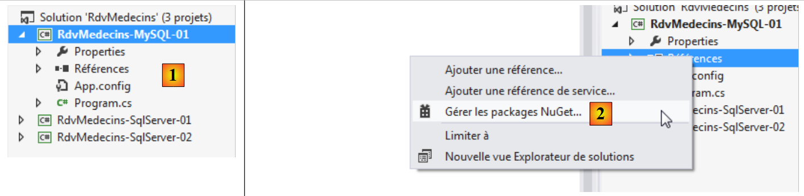
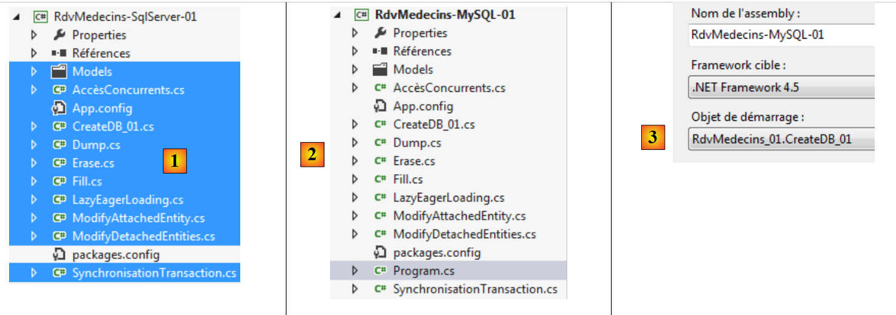
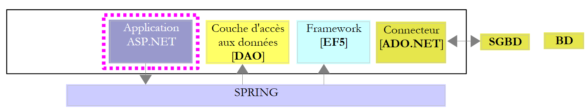
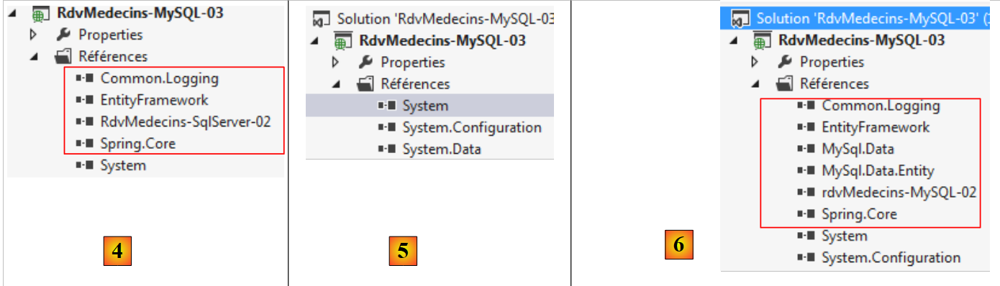

4. Etude de cas avec MySQL 5.5.28
4.1. Installation des outils
Les outils à installer sont les suivants :
- le SGBD : [http://dev.mysql.com/downloads/] ;
- un outil d'administration : EMS SQL Manager for MySQL Freeware [http://www.sqlmanager.net/fr/products/mysql/manager/download].
Dans les exemples qui suivent, l'utilisateur root a le mot de passe root.
Lançons MySQL5. ici, nous le faisons à partir de la fenêtre des services Windows [1]. En [2], le SGBD est lancé.
 |
Nous lançons maintenant l'outil [SQL Manager Lite for MySQL] avec lequel on va administrer le SGBD [3].
 |
- en [4], nous créons une nouvelle base ;
- en [5], on indique le nom de la base ;
 |
- en [5], on se connecte en tant root / root ;
- en [6], on valide l'ordre SQL qui va être exécuté ;
 |
- en [7], la base a été créée. Elle doit maintennat être enregistrée dans [EMS Manager]. Les informations sont bonnes. On fait [OK] ;
- en [8], on s'y connecte ;
- en [9], [EMS Manager] affiche la base, pour l'instant vide.
Nous allons maintenant connecter un projet VS 2012 à cette base.
4.2. Création de la base à partir des entités
Nous créons le projet console VS 2012 [RdvMedecins-MySQL-01] [1] ci-dessous :
 |
- en [2], on ajoute des références au projet via NuGet ;
 |
- en [3], on ajoute la référence EF 5 ;
- en [4], elle est désormais dans les références ;
 |
- en [5], on recommence pour ajouter cette fois [MySQL.Data.Entities] qui est un connecteur ADO.NET pour Entity Framework. Pour trouver le paquetage, on peut se faire aider par la zone de recherche [6] ;
- en [7], apparaissent deux références [MySQL.Data.Entities] et [MySQL.Data], la dernière étant une dépendance de la première.
Maintenant, on va construire le projet [RdvMedecins-MySQL-01] à partir du projet [RdvMedecins-SqlServer-01].
 |
- en [1], on copie les éléments sélectionnés ;
- en [2], on les colle dans le projet [RdvMedecins-MySQL-01] ;
- en [3], parce qu'il y a plusieurs programmes avec une méthode [Main], il nous faut préciser le projet de démarrage du projet.
A ce stade, la génération du projet doit réussir. Maintenant, nous allons modifier le fichier de configuration [App.config] qui configure la chaîne de connexion à la base de données et le DbProviderFactory. Il devient le suivant :
<?xml version="1.0" encoding="utf-8"?>
<configuration>
<configSections>
<!-- For more information on Entity Framework configuration, visit http://go.microsoft.com/fwlink/?LinkID=237468 -->
<section name="entityFramework" type="System.Data.Entity.Internal.ConfigFile.EntityFrameworkSection, EntityFramework, Version=5.0.0.0, Culture=neutral, PublicKeyToken=b77a5c561934e089" requirePermission="false" />
</configSections>
<startup>
<supportedRuntime version="v4.0" sku=".NETFramework,Version=v4.5" />
</startup>
<entityFramework>
<defaultConnectionFactory type="System.Data.Entity.Infrastructure.SqlConnectionFactory, EntityFramework" />
</entityFramework>
<!-- chaîne de connexion-->
<connectionStrings>
<add name="monContexte"
connectionString="Server=localhost;Database=rdvmedecins-ef;Uid=root;Pwd=root;"
providerName="MySql.Data.MySqlClient" />
</connectionStrings>
<!-- le factory provider -->
<system.data>
<DbProviderFactories>
<add name="MySQL Data Provider" invariant="MySql.Data.MySqlClient" description=".Net Framework Data Provider for MySQL"
type="MySql.Data.MySqlClient.MySqlClientFactory, MySql.Data, Version=6.5.4.0, Culture=neutral, PublicKeyToken=C5687FC88969C44D"
/>
</DbProviderFactories>
</system.data>
</configuration>
- ligne 17 : la chaîne de connexion à la base MySQL [rdvmedecins-ef] que nous avons créée ;
- ligne 24 : la version doit correspondre à celle de la référence [MySql.Data] du projet [1] :
 |
Il y a un peu de configuration également dans le fichier [Entites.cs] où on précise le nom des tables ainsi que le schéma auquel elles appartiennent. Celui-ci peut changer selon les SGBD. C'est le cas ici, où il n'y aura pas de schéma. Le fichier [Entites.cs] évolue comme suit :
[Table("MEDECINS")]
public class Medecin : Personne
{...}
[Table("CLIENTS")]
public class Client : Personne
{...}
[Table("CRENEAUX")]
public class Creneau
{...}
[Table("RVS")]
public class Rv
{...}
Exécutons le programme [CreateDB_01] [2]. On obtient l'exception suivante :
La même erreur apparaît quatre fois (lignes 2-5). Le type rowversion fait penser au champ ayant l'annotation [Timestamp] dans les entités :
[Column("TIMESTAMP")]
[Timestamp]
public byte[] Timestamp { get; set; }
Nous décidons de remplacer ces trois lignes par les suivantes :
[ConcurrencyCheck]
[Column("VERSIONING")]
public DateTime? Versioning { get; set; }
On change le type de la colonne qui passe de byte[] à DateTime?. On fait cela parce que MySQL a un type [TIMESTAMP] qui représente une date / heure et qu'une colonne ayant ce type est automatiquement mise à jour par MySQL à chaque fois que la ligne est mise à jour. Cela nous permettra de gérer les accès concurrents.
L'annotation [Timestamp] ne peut s'appliquer qu'à une colonne de type byte[]. On la remplace par l'annotation [ConcurrencyCheck]. Ces deux annotations gèrent toutes deux la concurrence d'accès. Nous faisons cela pour les quatre entités puis nous réexécutons l'application. Nous obtenons alors l'erreur suivante :
La ligne 1 indique une erreur de syntaxe sur le SQL exécuté par MySQL. Comme celui-ci n'a pas été généré par nous mais par le provider ADO.NET de MySQL, nous ne pouvons pas corriger ce point. Néanmoins, on peut constater que des tables ont été créées [1] ci-dessous :
 |
- en [2], on voit la structure de la table [clients] [3].
Il y a plusieurs modifications à faire sur la base générée :
- le type de la colonne [VERSIONING] ne convient pas. Il faut lui donner le type MySQL [TIMESTAMP] ;
- on se rappelle que la table [rvs] a une contrainte d'unicité. Elle n'a pas été créée par cette génération ;
- le connecteur ADO.NET de SQL Server avait généré des clés étrangères avec la clause ON DELETE CASCADE. Le connecteur ADO.NET de MySQL ne l'a pas fait.
Comme nous l'avons fait avec SQL Server, il nous faut donc modifier la base générée. Nous ne montrons pas comment faire les modifications. Nous donnons simplement le script de création de la base :
# SQL Manager Lite for MySQL 5.3.0.2
# ---------------------------------------
# Host : localhost
# Port : 3306
# Database : rdvmedecins-ef
/*!40101 SET @OLD_CHARACTER_SET_CLIENT=@@CHARACTER_SET_CLIENT */;
/*!40101 SET @OLD_CHARACTER_SET_RESULTS=@@CHARACTER_SET_RESULTS */;
/*!40101 SET @OLD_COLLATION_CONNECTION=@@COLLATION_CONNECTION */;
/*!40101 SET NAMES utf8 */;
SET FOREIGN_KEY_CHECKS=0;
USE `rdvmedecins-ef`;
#
# Structure for the `clients` table :
#
CREATE TABLE `clients` (
`ID` INTEGER(11) NOT NULL AUTO_INCREMENT,
`NOM` VARCHAR(30) COLLATE utf8_general_ci NOT NULL,
`PRENOM` VARCHAR(30) COLLATE utf8_general_ci NOT NULL,
`TITRE` VARCHAR(5) COLLATE utf8_general_ci NOT NULL,
`VERSIONING` TIMESTAMP NOT NULL ON UPDATE CURRENT_TIMESTAMP DEFAULT CURRENT_TIMESTAMP,
PRIMARY KEY USING BTREE (`ID`) COMMENT ''
)ENGINE=InnoDB
AUTO_INCREMENT=96 AVG_ROW_LENGTH=4096 CHARACTER SET 'utf8' COLLATE 'utf8_general_ci'
COMMENT=''
;
#
# Structure for the `medecins` table :
#
CREATE TABLE `medecins` (
`ID` INTEGER(11) NOT NULL AUTO_INCREMENT,
`NOM` VARCHAR(30) COLLATE utf8_general_ci NOT NULL,
`PRENOM` VARCHAR(30) COLLATE utf8_general_ci NOT NULL,
`TITRE` VARCHAR(5) COLLATE utf8_general_ci NOT NULL,
`VERSIONING` TIMESTAMP NOT NULL ON UPDATE CURRENT_TIMESTAMP DEFAULT CURRENT_TIMESTAMP,
PRIMARY KEY USING BTREE (`ID`) COMMENT ''
)ENGINE=InnoDB
AUTO_INCREMENT=56 AVG_ROW_LENGTH=4096 CHARACTER SET 'utf8' COLLATE 'utf8_general_ci'
COMMENT=''
;
#
# Structure for the `creneaux` table :
#
CREATE TABLE `creneaux` (
`ID` INTEGER(11) NOT NULL AUTO_INCREMENT,
`HDEBUT` INTEGER(11) NOT NULL,
`MDEBUT` INTEGER(11) NOT NULL,
`HFIN` INTEGER(11) NOT NULL,
`MFIN` INTEGER(11) NOT NULL,
`MEDECIN_ID` INTEGER(11) NOT NULL,
`VERSIONING` TIMESTAMP NOT NULL ON UPDATE CURRENT_TIMESTAMP DEFAULT CURRENT_TIMESTAMP,
PRIMARY KEY USING BTREE (`ID`) COMMENT '',
INDEX `MEDECIN_ID` USING BTREE (`MEDECIN_ID`) COMMENT '',
CONSTRAINT `creneaux_ibfk_1` FOREIGN KEY (`MEDECIN_ID`) REFERENCES `medecins` (`ID`) ON DELETE CASCADE ON UPDATE NO ACTION
)ENGINE=InnoDB
AUTO_INCREMENT=472 AVG_ROW_LENGTH=455 CHARACTER SET 'utf8' COLLATE 'utf8_general_ci'
COMMENT=''
;
#
# Structure for the `rvs` table :
#
CREATE TABLE `rvs` (
`ID` INTEGER(11) NOT NULL AUTO_INCREMENT,
`JOUR` DATE NOT NULL,
`CRENEAU_ID` INTEGER(11) NOT NULL,
`CLIENT_ID` INTEGER(11) NOT NULL,
`VERSIONING` TIMESTAMP NOT NULL ON UPDATE CURRENT_TIMESTAMP DEFAULT CURRENT_TIMESTAMP,
PRIMARY KEY USING BTREE (`ID`) COMMENT '',
UNIQUE INDEX `CRENEAU_ID_JOUR` USING BTREE (`JOUR`, `CRENEAU_ID`) COMMENT '',
INDEX `CRENEAU_ID` USING BTREE (`CRENEAU_ID`) COMMENT '',
INDEX `CLIENT_ID` USING BTREE (`CLIENT_ID`) COMMENT '',
CONSTRAINT `rvs_ibfk_2` FOREIGN KEY (`CLIENT_ID`) REFERENCES `clients` (`ID`) ON DELETE CASCADE ON UPDATE NO ACTION,
CONSTRAINT `rvs_ibfk_1` FOREIGN KEY (`CRENEAU_ID`) REFERENCES `creneaux` (`ID`) ON DELETE CASCADE ON UPDATE NO ACTION
)ENGINE=InnoDB
AUTO_INCREMENT=28 AVG_ROW_LENGTH=16384 CHARACTER SET 'utf8' COLLATE 'utf8_general_ci'
COMMENT=''
;
- lignes 22, 38, 54, 74 : les clés primaires ID des tables sont de type AUTO_INCREMENT donc générées par MySQL ;
- lignes 26, 42, 60, 78 : la colonne VERSIONING est de type TIMESTAMP et est mise à jour lors d'un INSERT ou d'un UPDATE ;
- ligne 63 : la clé étrangère de la table [creneaux] vers la table [medecins] avec la clause ON DELETE CASCADE ;
- ligne 80 : la contrainte d'unicité de la table [rvs] ;
- ligne 83 : la clé étrangère de la table [rvs] vers la table [creneaux] avec la clause ON DELETE CASCADE ;
- ligne 84 : la clé étrangère de la table [rvs] vers la table [clients] avec la clause ON DELETE CASCADE ;
Le script de génération des tables de la base MySQL [rvmedecins-ef] a été placé dans le dossier [RdvMedecins / databases / mysql]. Le lecteur pourra le charger et l'exécuter pour créer ses tables.
Ceci fait, les différents programmes du projet peuvent être exécutés. Ils donnent les mêmes résultats qu'avec SQL Server sauf pour le programme [ModifyDetachedEntities] qui plante. Pour comprendre pourquoi, on peut regarder le résultat du programme [ModifyAtttachedEntities] :
- lignes 1-2 : un client avant sauvegarde du contexte ;
- lignes 3-4 : le client après la sauvegarde. Il a une clé primaire mais pas de valeur pour son champ [Versioning] alors que SQL Server mettait à jour le champ [Timestamp] de l'entité.
Maintenant examinons le code du programme [ModifyDetachedEntities] qui plante :
using System;
...
namespace RdvMedecins_01
{
class ModifyDetachedEntities
{
static void Main(string[] args)
{
Client client1;
// on vide la base actuelle
Erase();
// on ajoute un client
using (var context = new RdvMedecinsContext())
{
// création client
client1 = new Client { Titre = "x", Nom = "x", Prenom = "x" };
// ajout du client au contexte
context.Clients.Add(client1);
// on sauvegarde le contexte
context.SaveChanges();
}
// affichage base
Dump("1-----------------------------");
// client1 n'est pas dans le contexte - on le modifie
client1.Nom = "y";
// modification entité hors contexte
using (var context = new RdvMedecinsContext())
{
// ici, on a un nouveau contexte vide
// on met client1 dans le contexte dans un état modifié
context.Entry(client1).State = EntityState.Modified;
// on sauvegarde le contexte
context.SaveChanges();
}
...
}
static void Erase()
{
...
}
static void Dump(string str)
{
...
}
}
}
- ligne 20 : un client est sauvegardé. Il a alors sa clé primaire mais par sa version ;
- ligne 33 : une modification est faite avec client1. Elle échoue car il n'a pas la version qui est en base.
On résoud le problème en intercalant le code suivant entre les lignes 25 et 26 :
// on récupère client1 pour avoir sa version
using (var context = new RdvMedecinsContext())
{
// client2 sera dans le contexte
Client client2 = context.Clients.Find(client1.Id);
// on fixe la version de client1 à celle de client2
client1.Versioning = client2.Versioning;
}
Désormais, l'entité [client1] a la même version qu'en base et peut donc être utilisée pour une mise à jour de la ligne en base.
4.3. Architecture multi-couche s'appuyant sur EF 5
Nous revenons à notre étude de cas décrite au paragraphe 2.
 |
Nous allons commencer par construire la couche [DAO] d'accès aux données. Pour ce faire, nous créons le projet console VS 2012 [RdvMedecins-MySQL-02] [1] :
 |
- en [2], les références [Common.Logging, EntityFramework, MySql.Data, MySql.Data.Entity, Spring.Core] sont ajoutées avec NuGet ;
- en [3], le dossier [Models] est recopié du projet [RdvMedecins-MySQL-01] ;
 |
- en [4], les dossiers [Dao, Exception, Tests] et le fichier [App.config] sont recopiés du projet [RdvMedecins-SqlServer-02] ;
- en [5], le fichier [Program.cs] a été supprimé ;
- en [6], le projet est configuré pour exécuter le programme de test de la couche [DAO].
Dans le fichier [App.config], on remplace les informations de la base SQL Server par celles de la base MySQL. On les trouve dans le fichier [App.config] du projet [RdvMedecins-MySQL-01] :
<!-- chaîne de connexion-->
<connectionStrings>
<add name="monContexte"
connectionString="Server=localhost;Database=rdvmedecins-ef;Uid=root;Pwd=root;"
providerName="MySql.Data.MySqlClient" />
</connectionStrings>
<!-- le factory provider -->
<system.data>
<DbProviderFactories>
<add name="MySQL Data Provider" invariant="MySql.Data.MySqlClient" description=".Net Framework Data Provider for MySQL"
type="MySql.Data.MySqlClient.MySqlClientFactory, MySql.Data, Version=6.5.4.0, Culture=neutral, PublicKeyToken=C5687FC88969C44D"
/>
</DbProviderFactories>
</system.data>
Les objets gérés par Spring changent également. Actuellement on a :
<!-- configuration Spring -->
<spring>
<context>
<resource uri="config://spring/objects" />
</context>
<objects xmlns="http://www.springframework.net">
<object id="rdvmedecinsDao" type="RdvMedecins.Dao.Dao,RdvMedecins-SqlServer-02" />
</objects>
</spring>
La ligne 7 référence l'assembly du projet [RdvMedecins-SqlServer-02]. L'assembly est désormais [RdvMedecins-MySQL-02].
Ceci fait, nous sommes prêts à exécuter le test de la couche [DAO]. Il faut auparavant prendre soin de remplir la base (programme [Fill] du projet [RdvMedecins-MySQL-01]). Le programme de test réussit.
Nous créons la DLL du projet comme il a été fait pour le projet [RdvMedecins-SqlServer-02] et nous rassemblons l'ensemble des DLL du projet dans un dossier [lib] créé dans [RdvMedecins-MySQL-02]. Ce seront les références du projet web [RdvMedecins-MySQL-03] qui va suivre.
 |
Nous sommes désormais prêts pour construire la couche [ASP.NET] de notre aplication :
 |
Nous allons partir du projet [RdvMedecins-SqlServer-03]. Nous dupliquons le dossier de ce projet dans [RdvMedecins-MySQL-03] [1] :
 |
- en [2], avec VS 2012 Express pour le web, nous ouvrons la solution du dossier [RdvMedecins-MySQL-03] ;
- en [3], nous changeons et le nom de la solution et le nom du projet ;
 |
- en [4], les références actuellesdu projet ;
- en [5], on les supprime ;
- en [6], pour les remplacer par des références sur les DLL que nous venons de stocker dans un dossier [lib] du projet [RdvMedecins-MySQL-02].
Il ne nous reste plus qu'à modifier le fichier [Web.config] On remplace son contenu actuel par le contenu du fichier [App.config] du projet [RdvMedecins-MySQL-02]. Ceci fait, on exécute le projet web. Il marche.
4.4. Conclusion
Récapitulons ce qui a été fait pour passer du SGBD SQL server au SGBD MySQL :
- le champ qui servait à gérer la concurrence d'accès aux entités a été changé. Sa version SQL Server était :
[Column("TIMESTAMP")]
[Timestamp]
public byte[] Timestamp { get; set; }
Elle est devenue :
[ConcurrencyCheck]
[Column("VERSIONING")]
public DateTime? Versioning { get; set; }
avec MySQL ;
- les annotations [Table] qui lient une entité à une table ont été changées ;
- la chaîne de connexion à la base et le [DbProviderFactory] ont été modifiés dans les fichiers de configuration [App.config] et [Web.config] ;
- après sauvegarde en base, une entité SQL Server avait à la fois sa clé primaire et son Timestamp. Avec MySQL, elle avait seulement sa clé primaire. Cela a amené la modification d'un code.
Au final, c'est assez peu de modifications mais il a quand même fallu revoir du code. Nous recommençons la même démarche pour trois autres SGBD :
- Le SGBD Oracle Database Express Edition 11g Release 2 ;
- Le SGBD PostgreSQL 9.2.1 ;
- Le SGBD Firebird 2.1.